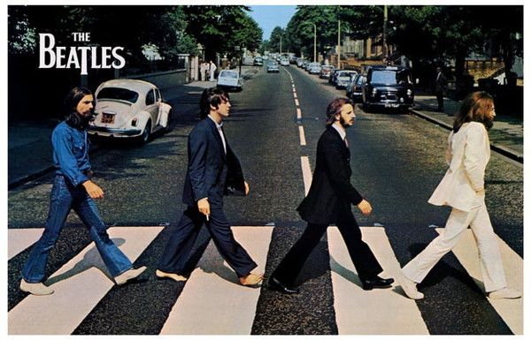

ABOUT
The Beatles were an English rock band formed in Liverpool in 1960. The group, whose best-known line-up comprised John Lennon, Paul McCartney, George Harrison and Ringo Starr, are regarded as the most influential band of all time. They were integral to the development of 1960s counterculture and popular music's recognition as an art form. Rooted in skiffle, beat and 1950s rock and roll, their sound incorporated elements of classical music and traditional pop in innovative ways; the band later explored music styles ranging from ballads and Indian music to psychedelia and hard rock. As pioneers in recording, songwriting and artistic presentation, the Beatles revolutionised many aspects of the music industry and were often publicised as leaders of the era's youth and sociocultural movements.

The Beatles are the best-selling music act of all time, with estimated sales of 600 million units worldwide. They are the best-selling act in the US, with certified sales of 183 million units. They hold the record for most number-one albums on the UK Albums Chart, most number-one hits on the Billboard Hot 100 chart, and most singles sold in the UK. The group were inducted into the Rock and Roll Hall of Fame in 1988, and all four main members were inducted individually between 1994 and 2015. In 2008, the group topped Billboard's list of the all-time most successful artists on the Billboard Hot 100. The band received seven Grammy Awards, four Brit Awards, an Academy Award (for Best Original Song Score for the 1970 film Let It Be) and fifteen Ivor Novello Awards. Time magazine named them among the 20th century's 100 most important people.